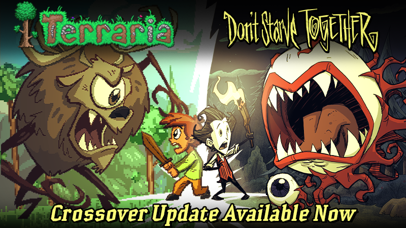

Terraria, é um jogo mundialmente popular, de RPG criado em 16 de maio de 2011 pela empresa Re-logic. Terraria é um jogo bidimensional do gênero Sandbox. A jogabilidade de Terraria envolve mineração, exploração, construção e combate, com modos um jogador e multijogador. Terraria é frequentemente comparado com jogos como Minecraft e Metroid devido suas semelhanças de design de jogo. Antes de começar, o jogador possui a possibilidade de personalizar seu personagem, nível de dificuldade, tamanho do mapa, atalhos do teclado, a cor do cursor, dentre diversas outras opções.
2024 | Alexandre 1 DA All rights reserved | Legal | PC dedicated Server | About Us